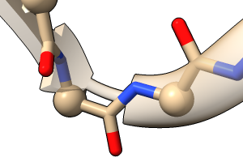
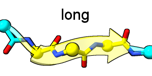

The cartoon or ribbon command shows a simplified backbone representation of the specified biopolymer residues, with additional settings for smoothing and whether a residue's backbone atoms can be shown at the same time as its cartoon segment. These settings can be different for different residues. Changes in settings apply only to the atomic models already present, not subsequently opened models.
The command ~cartoon (or ~ribbon) hides cartoon for the specified residues. The commands hide and show can also be used to control cartoon display. See also: rungs, struts, Molecule Display Toolbar
Protein helix and strand assignments are read from the input structure file or calculated with dssp. The cartoon path is guided by CA atoms (α-carbons) in peptides and C5' in nucleic acids. The smooth factor sets the balance between smoothing peptide strands versus following the exact positions of the α-carbons (0.0 unsmoothed, default 1.0 maximally smoothed). Specifying default instead of a numerical value sets the value to 1.0. Smoothing applies only to peptide β-strands, not α-helices, coil, or nucleic acids. Each residue can have a different value of factor, and lower values are recommended where sidechains are displayed, to preclude showing tethers.
By default, showing the cartoon for a residue suppresses the display of its backbone atoms. Simultaneous display can be enabled with hideBackbone false; otherwise, the backbone atoms hidden by cartoons are N, C, and O in amino acids and the phosphate moieties including O5' in nucleic acids.
Subcommands of cartoon control per-model settings:
Even if fewer atoms are specified, any applicable settings for the entire model(s) containing them will be changed. However, as noted below, some settings can have different values for different types of secondary structure even within the same model; these can be changed separately by using the words helix, strand, coil, and/or nucleic in the atom-spec. Conversely, a blank atom-spec indicates all applicable models and secondary structure types. Parameters not specified in the command retain their current values. Examples:
cartoon style width 1.5 thick 0.3
cartoon style helix width 1.5 thick 0.3
car style strand xsection rect width 2
cartoon style nucleic width 2 thickness 2 xsection round
ribbon style modeh tube
rib style x rect
rib style (#1 & coil) x round
cartoon style #2 arrows f wid 1 thick 1 x round
cartoon tether #3 shape steeple
Option keywords and Boolean (truth) values can be truncated, with synonyms for true: True, 1, and synonyms for false: False, 0. A vertical bar “|” designates mutually exclusive values.
• ( cartoon | ribbon ) style atom-spec [ width w ] [ thickness t ] [ xsection oval | rectangle | barbell ] [ ssEnds short | long ] model-options• ( cartoon | ribbon ) tether atom-spec [ shape cone | steeple | cylinder ] [ sides Nt ] [ scale scale ] [ opacity opacity ]* cartoon style syntax and options are likely to change, and the settings are not yet saved in sessions *
Given without options, cartoon style reports the current settings for each atomic model. The following may be set separately for peptide helix, strand, coil, and nucleic acid (see atom-spec terms), even within the same model:
The width w and thickness t are given in Å. The width setting does not affect coil, however, as only its thickness is used in both dimensions. The initial default width and thickness are 2.0 and 0.4 Å, respectively.The xsection or cross-sectional shape of the cartoon can be oval (synonym round), rectangle (synonym square), or barbell with rounded edges and a thinner middle (synonym piping). The barbell cross-section does not apply to coil and does not affect arrowheads. The initial default cross-section is oval for helix and coil, rectangle for strand and nucleic.
The ssEnds type specifies the length and register of peptide helix and/or strand representations relative to the backbone atoms, with possible values:
 
- short - depiction of the helix or strand secondary structure element (SSE) starts at the Cα of its first (N-terminal) residue and ends at the Cα of its last (C-terminal) residue
- long - depiction of the SSE starts at the Cα of its first residue (same as for short) but ends in the middle of its following peptide bond
The remainder of the peptide chain is shown as coil-like segments. Currently, the initial default is short for both strands and helices. (Due to a bug, this is mostly but not always true; enforce short ends with command cartoon style ssEnds short.)
The following cartoon style options have only a single value per model:
modeHelix tube | default
The modeHelix option allows showing peptide helices as tubes (curved cylinders) rather than as ribbons spiraling along the backbone atoms (initial default). Other than sides, most helix settings such as width, height, cross-section, and arrows do not apply to helices in the tube mode.arrows true | false
Whether to show arrowheads at the C-terminal ends of peptide strands (initial default true).arrowsHelix true | false
Whether to show arrowheads at the C-terminal ends of peptide helices (initial default false).arrowScale factor
The factor (initial default 2.0) is multiplied by the width of helix or strand to give the arrowhead width.sides N
The number of straight-line segments used to draw an oval cross-section or tube helix, with higher numbers corresponding to finer subdivisions (initial default 12). Shading is used to give a smooth, rounded appearance despite this approximation of the shape with facets.barSides Nb
The number of straight-line segments used to draw a barbell cross-section (initial default 18). Odd values of barSides Nb are automatically rounded up to the next even number.barScale factor
The factor (range 0.2–1.0, initial default 0.5) is multiplied by the thickness to give the central “bar” thickness of barbell cross-section relative to the edges, where the nominal value applies.orient peptide | atoms | curvature | guides
The orient option specifies how to determine the crosswise orientation of the ribbon at the primary atoms, CA in peptides and C5' in nucleic acids:Currently only a single value for orient is allowed per model, but we plan to allow different values for peptide helices, peptide strands, and nucleic acids within a model. The often poor appearance of helices in the peptide orientation (preferred for the strands) can be circumvented by showing helices as tubes instead.
- peptide (initial default) - using the peptide planes in proteins (generally best for strands) and the guides method in nucleic acids
- atoms - generally best for peptide helices
- curvature - similar to atoms
- guides - using the CA→O (carbonyl oxygen) vectors in peptides and C5'→C1' vectors in nucleic acids
A tether is drawn between a displayed α-carbon (CA atom) and the corresponding cartoon segment where they are offset (path-smoothing factor > 0). Tether shape can be:
The sides option controls the number of planar facets used to draw a tether (range 3-10, initial default 4). The scale option sets tether base radius relative to the display radius of the corresponding α-carbon (range 0.0-1.0, initial default 1.0). The tether opacity value (1 – transparency) can range from 0.0 (completely transparent, allows hiding the tethers) to 1.0 (completely opaque), with initial default 0.5. The tether color tracks the color of the corresponding α-carbon.
- cone (initial default) - cone with base at the α-carbon, point at the cartoon
- steeple - cone with base at the cartoon, point at the α-carbon
- cylinder